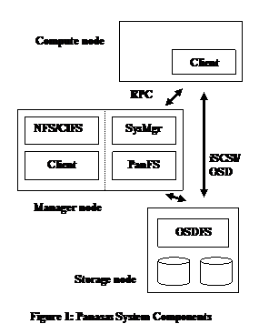
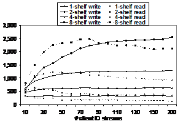
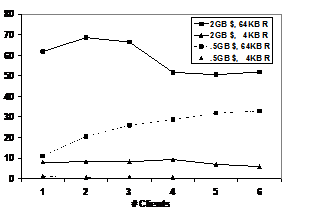
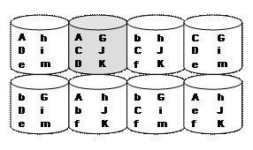
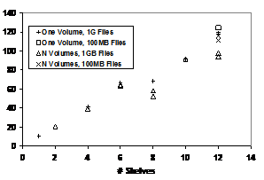
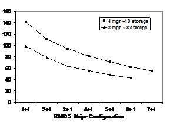
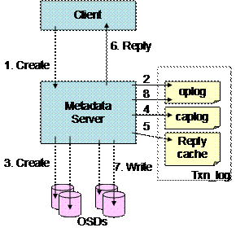
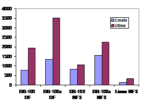
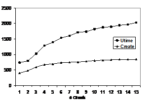
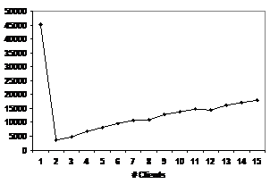

Scalable Performance of the Panasas Parallel File
System
Brent Welch1, Marc Unangst1, Zainul
Abbasi1,
Jason Small1, Jim
Zelenka1, Bin Zhou1
1Panasas, Inc. 2Carnegie Mellon
{welch,mju,zabbasi,garth,bmueller,jsmall,jimz,bzhou}@panasas.com
Abstract
The Panasas file system uses parallel and redundant access to object storage devices (OSDs), per-file RAID, distributed metadata management, consistent client caching, file locking services, and internal cluster management to provide a scalable, fault tolerant, high performance distributed file system. The clustered design of the storage system and the use of client-driven RAID provide scalable performance to many concurrent file system clients through parallel access to file data that is striped across OSD storage nodes. RAID recovery is performed in parallel by the cluster of metadata managers, and declustered data placement yields scalable RAID rebuild rates as the storage system grows larger. This paper presents performance measures of I/O, metadata, and recovery operations for storage clusters that range in size from 10 to 120 storage nodes, 1 to 12 metadata nodes, and with file system client counts ranging from 1 to 100 compute nodes. Production installations are as large as 500 storage nodes, 50 metadata managers, and 5000 clients.
Storage systems for high performance computing environments must be designed to scale in performance so that they can be configured to match the required load. Clustering techniques are often used to provide scalability. In a storage cluster, many nodes each control some storage, and the overall distributed file system assembles the cluster elements into one large, seamless storage system. The storage cluster can be hosted on the same computers that perform data processing, or they can be a separate cluster that is devoted entirely to storage and accessible to the compute cluster via a network protocol.
The Panasas storage system is a specialized storage cluster, and this paper presents its design and a number of performance measurements to illustrate the scalability. The Panasas system is a production system that provides file service to some of the largest compute clusters in the world, in scientific labs, in seismic data processing, in digital animation studios, in computational fluid dynamics, in semiconductor manufacturing, and in general purpose computing environments. In these environments, hundreds or thousands of file system clients share data and generate very high aggregate I/O load on the file system. The Panasas system is designed to support several thousand clients and storage capacities in excess of a petabyte.
The unique aspects of the Panasas system are its use of per-file, client-driven RAID, its parallel RAID rebuild, its treatment of different classes of metadata (block, file, system) and a commodity parts based blade hardware with integrated UPS. Of course, the system has many other features (such as object storage, fault tolerance, caching and cache consistency, and a simplified management model) that are not unique, but are necessary for a scalable system implementation.
This section makes a brief tour through the system to provide an overview for the following sections. The two overall themes to the system are object storage, which affects how the file system manages its data, and clustering of components, which allows the system to scale in performance and capacity.
The storage cluster is divided into storage nodes and manager nodes at a ratio of about 10 storage nodes to 1 manager node, although that ratio is variable. The storage nodes implement an object store, and are accessed directly from Panasas file system clients during I/O operations. The manager nodes manage the overall storage cluster, implement the distributed file system semantics, handle recovery of storage node failures, and provide an exported view of the Panasas file system via NFS and CIFS. Figure 1 gives a basic view of the system components.
An object is a container for data and attributes; it is analogous to the inode inside a traditional UNIX file system implementation. Specialized storage nodes called Object Storage Devices (OSD) store objects in a local OSDFS file system. The object interface addresses objects in a two-level (partition ID/object ID) namespace. The OSD wire protocol provides byte-oriented access to the data, attribute manipulation, creation and deletion of objects, and several other specialized operations [OSD04]. We use an iSCSI transport to carry OSD commands that are very similar to the OSDv2 standard currently in progress within SNIA and ANSI-T10 [SNIA].
The Panasas file system is layered over the object storage. Each file is striped over two or more objects to provide redundancy and high bandwidth access. The file system semantics are implemented by metadata managers that mediate access to objects from clients of the file system. The clients access the object storage using the iSCSI/OSD protocol for Read and Write operations. The I/O operations proceed directly and in parallel to the storage nodes, bypassing the metadata managers. The clients interact with the out-of-band metadata managers via RPC to obtain access capabilities and location information for the objects that store files. The performance of striped file access is presented later in the paper.
Object attributes are used to store file-level attributes, and directories are implemented with objects that store name to object ID mappings. Thus the file system metadata is kept in the object store itself, rather than being kept in a separate database or some other form of storage on the metadata nodes. Metadata operations are described and measured later in this paper.
The major software subsystems are the OSDFS object storage system, the Panasas file system metadata manager, the Panasas file system client, the NFS/CIFS gateway, and the overall cluster management system.
�
The Panasas client is an installable kernel module that runs inside the
Linux kernel. The kernel module implements the standard VFS interface, so that
the client hosts can mount the file system and use a POSIX interface to the
storage system. We don�t require any
patches to run inside the 2.4 or 2.6 Linux kernel, and have tested with over
200 Linux variants.
�
Each storage cluster node runs a common platform that is based on
FreeBSD, with additional services to provide hardware monitoring, configuration
management, and overall control.
�
The storage nodes use a specialized local file system (OSDFS) that
implements the object storage primitives. They implement an iSCSI target and
the OSD command set. The OSDFS object store and iSCSI target/OSD command
processor are kernel modules. OSDFS is concerned with traditional block-level
file system issues such as efficient disk arm utilization, media management
(i.e., error handling), high throughput, as well as the OSD interface.
�
The cluster manager (SysMgr) maintains the global configuration, and it
controls the other services and nodes in the storage cluster. There is an
associated management application that provides both a command line interface
(CLI) and an HTML interface (GUI). These are all user level applications that
run on a subset of the manager nodes.
The cluster manager is concerned with membership in the storage cluster,
fault detection, configuration management, and overall control for operations
like software upgrade and system restart [Welch07].
� The Panasas metadata manager
(PanFS) implements the file system semantics and manages data striping across
the object storage devices. This is a user level application that runs on every
manager node. The metadata manager is
concerned with distributed file system issues such as secure multi-user access,
maintaining consistent file- and object-level metadata, client cache coherency,
and recovery from client, storage node,
and metadata server crashes. Fault tolerance is based on a local transaction
log that is replicated to a backup on a different manager node.
� The NFS and CIFS services provide access to the file
system for hosts that cannot use our Linux installable file system client. The
NFS service is a tuned version of the standard FreeBSD NFS server that runs
inside the kernel. The CIFS service is based on Samba and runs at user
level. In turn, these services use a
local instance of the file system client, which runs inside the FreeBSD
kernel. These gateway services
run on every manager node to provide a clustered NFS and CIFS service.
The storage cluster nodes are implemented as blades that are very compact computer systems made from commodity parts. The blades are clustered together to provide a scalable platform. Up to 11 blades fit into a 4U (7 inches) high shelf chassis that provides dual power supplies, a high capacity battery, and one or two 16-port GE switches. The switches aggregate the GE ports from the blades into a 4 GE trunk. The 2nd switch provides redundancy and is connected to a 2nd GE port on each blade. The battery serves as a UPS and powers the shelf for a brief period of time (about five minutes) to provide orderly system shutdown in the event of a power failure. Any number of blades can be combined to create very large storage systems.
The OSD StorageBlade module and metadata manager DirectorBlade module use the same form factor blade and fit into the same chassis slots. The StorageBlade module contains a commodity processor, two disks, ECC memory, and dual GE NICs. The DirectorBlade module has a faster processor, more memory, dual GE NICs, and a small private disk. In addition to metadata management, DirectorBlades also provide NFS and CIFS service, and their large memory is used as a data cache when serving these protocols. Details of the different blades used in the performance experiments are given in Appendix I.
Any number of shelf chassis can be grouped into the same storage cluster. A shelf typically has one or two DirectorBlade modules and 9 or 10 StorageBlade modules. A shelf with 10 StorageBlade modules contains 5 to 15 TB of raw storage in 4U of rack space. Customer installations range in size from 1 shelf to around 50 shelves, although there is no enforced limit on system size.
While the hardware is essentially a commodity PC (i.e., no ASICs), there are two aspects of the hardware that simplified our software design. The first is the integrated UPS in the shelf chassis that makes all of main memory NVRAM. The metadata managers do fast logging to memory and reflect that to a backup with low latency network protocols. OSDFS buffers write data so it can efficiently manage block allocation. The UPS powers the system for several minutes to protect the system as it shuts down cleanly after a power failure. The metadata managers flush their logs to a local disk, and OSDFS flushes writes through to disk. The logging mechanism is described and measured in detail later in the paper. The system monitors the battery charge level, and will not allow a shelf chassis to enter service without an adequately charged battery to avoid data loss during back-to-back power failures.
The other important aspect of the hardware is that blades are a Field Replaceable Unit (FRU). Instead of trying to repair a blade, if anything goes wrong with the hardware, the whole blade is replaced. We settled on a two-drive storage blade as a compromise between cost, performance, and reliability. Having the blade as a failure domain simplifies our fault tolerance mechanisms, and it provides a simple maintenance model for system administrators. Reliability and data reconstruction are described and measured in detail later in the paper.
Traditional storage management tasks involve partitioning available storage space into LUNs (i.e., logical units that are one or more disks, or a subset of a RAID array), assigning LUN ownership to different hosts, configuring RAID parameters, creating file systems or databases on LUNs, and connecting clients to the correct server for their storage. This can be a labor-intensive scenario. We sought to provide a simplified model for storage management that would shield the storage administrator from these kinds of details and allow a single, part-time admin to manage systems that were hundreds of terabytes in size.
The Panasas storage system presents itself as a file system with a POSIX interface, and hides most of the complexities of storage management. Clients have a single mount point for the entire system. The /etc/fstab file references the cluster manager, and from that the client learns the location of the metadata service instances. The administrator can add storage while the system is online, and new resources are automatically discovered. To manage available storage, we introduced two basic storage concepts: a physical storage pool called a BladeSet, and a logical quota tree called a Volume.
The BladeSet is a collection of StorageBlade modules in one or more shelves that comprise a RAID fault domain. We mitigate the risk of large fault domains with the scalable rebuild performance described in Section 4.2. The BladeSet is a hard physical boundary for the volumes it contains. A BladeSet can be grown at any time, either by adding more StorageBlade modules, or by merging two existing BladeSets together.
The Volume is a directory hierarchy that has a quota constraint and is assigned to a particular BladeSet. The quota can be changed at any time, and capacity is not allocated to the Volume until it is used, so multiple volumes compete for space within their BladeSet and grow on demand. The files in those volumes are distributed among all the StorageBlade modules in the BladeSet.
Volumes appear in the file system name space as directories. Clients have a single mount point for the whole storage system, and volumes are simply directories below the mount point. There is no need to update client mounts when the admin creates, deletes, or renames volumes.
Each Volume is managed by a single metadata manager. Dividing metadata management responsibility along volume boundaries (i.e., directory trees) was done primarily to keep the implementation simple. We figured that administrators would introduce volumes (i.e., quota trees) for their own reasons, and this would provide an easy, natural boundary. We were able to delay solving the multi-manager coordination problems created when a parent directory is controlled by a different metadata manager than a file being created, deleted, or renamed within it. We also had a reasonable availability model for metadata manager crashes; well-defined subtrees would go offline rather than a random sampling of files. The file system recovery check implementation is also simplified; each volume is checked independently (and in parallel when possible), and errors in one volume don�t affect availability of other volumes. Finally, clients bypass the metadata manager during read and write operations, so the metadata manager�s load is already an order of magnitude smaller than a traditional file server storing the same number of files. This reduces the importance of fine-grain metadata load balancing. That said, uneven volume utilization can result in uneven metadata manager utilization. Our protocol allows the metadata manager to redirect the client to another manager to distribute load, and we plan to exploit this feature in the future to provide finer-grained load balancing.
While it is possible to have a very large system with one BladeSet and one Volume, and we have customers that take this approach, we felt it was important for administrators to be able to configure multiple storage pools and manage quota within them. Our initial model only had a single storage pool: a file would be partitioned into component objects, and those objects would be distributed uniformly over all available storage nodes. Similarly, metadata management would be distributed by randomly assigning ownership of new files to available metadata managers. This is similar to the Ceph model [Weil06]. The attraction of this model is smooth load balancing among available resources. There would be just one big file system, and capacity and metadata load would automatically balance. Administrators wouldn�t need to worry about running out of space, and applications would get great performance from large storage systems.
There are two problems with a single storage pool: the fault and availability model, and performance isolation between different users. If there are ever enough faults to disable access to some files, then the result would be that a random sample of files throughout the storage system would be unavailable. Even if the faults were transient, such as a node or service crash and restart, there will be periods of unavailability. Instead of having the entire storage system in one big fault domain, we wanted the administrator to have the option of dividing a large system into multiple fault domains, and of having a well defined availability model in the face of faults. In addition, with large installations the administrator can assign different projects or user groups to different storage pools. This isolates the performance and capacity utilization among different groups.
Our storage management design reflects a compromise between the performance and capacity management benefits of a large storage pool, the backup and restore requirements of the administrator, and the complexity of the implementation. In practice, our customers use BladeSets that range in size from a single shelf to more than 20 shelves, with the largest production Bladeset being about 50 shelves, or 500 StorageBlade modules and 50 DirectorBlade modules. The most common sizes, however, range from 5 to 10 shelves. While we encourage customers to introduce Volumes so the system can better exploit the DirectorBlade modules, we have customers that run large systems (e.g., 20 shelves) with a single Volume.
Capacity imbalance occurs when expanding a BladeSet (i.e., adding new, empty storage nodes), merging two BladeSets, and replacing a storage node following a failure. In the latter scenario, the imbalance is the result of our RAID rebuild, which uses spare capacity on every storage node rather than dedicating a specific �hot spare� node. This provides better throughput during rebuild (see section 4.2), but causes the system to have a new, empty storage node after the failed storage node is replaced. Our system automatically balances used capacity across storage nodes in a BladeSet using two mechanisms: passive balancing and active balancing.
Passive balancing changes the probability that a storage node will be used for a new component of a file, based on its available capacity. This takes effect when files are created, and when their stripe size is increased to include more storage nodes. Active balancing is done by moving an existing component object from one storage node to another, and updating the storage map for the affected file. During the transfer, the file is transparently marked read-only by the storage management layer, and the capacity balancer skips files that are being actively written. Capacity balancing is thus transparent to file system clients.
Capacity balancing can serve to balance I/O load across the storage pool. We have validated this in large production systems. Of course there can always be transient hot spots based on workload. It is important to avoid long term hot spots, and we did learn from some mistakes. The approach we take is to use a uniform random placement algorithm for initial data placement, and then preserve that during capacity balancing. The system must strive for a uniform distribution of both objects and capacity. This is more subtle than it may appear, and we learned that biases in data migration and placement can cause hot spots.
Initial data placement is uniform random, with the components of a file landing on a subset of available storage nodes. Each new file gets a new, randomized storage map. However, the uniform random distribution is altered by passive balancing that biases the creation of new data onto emptier blades. On the surface, this seems reasonable. Unfortunately, if a single node in a large system has a large bias as the result of being replaced recently, then it can end up with a piece of every file created over a span of hours or a few days. In some workloads, recently created files may be hotter than files created several weeks or months ago. Our initial implementation allowed large biases, and we occasionally found this led to a long-term hot spot on a particular storage node. Our current system bounds the effect of passive balancing to be within a few percent of uniform random, which helps the system fine tune capacity when all nodes are nearly full, but does not cause a large bias that can lead to a hot spot.
Another bias we had was favoring large objects for active balancing because it is more efficient. There is per-file overhead to update its storage map, so it is more efficient to move a single 1 GB component object than to move 1000 1 MB component objects. However, consider a system that has relatively few large files that are widely striped, and lots of other small files. When it is expanded from N to N+M storage nodes (e.g., grows from 50 to 60), should the system balance capacity by moving a few large objects, or by moving many small objects? If the large files are hot, it is a mistake to bias toward them because the new storage nodes can get a disproportionate number of hot objects. We found that selecting a uniform random sample of objects from the source blades was the best way to avoid bias and inadvertent hot spots, even if it means moving lots of small objects to balance capacity.
We protect against loss of a data object or an entire storage node by striping files across objects stored on different storage nodes, using a fault-tolerant striping algorithm such as RAID-1 or RAID-5. Small files are mirrored on two objects, and larger files are striped more widely to provide higher bandwidth and less capacity overhead from parity information. The per-file RAID layout means that parity information for different files is not mixed together, and easily allows different files to use different RAID schemes alongside each other. This property and the security mechanisms of the OSD protocol [Gobioff97] let us enforce access control over files even as clients access storage nodes directly. It also enables what is perhaps the most novel aspect of our system, client-driven RAID. That is, the clients are responsible for computing and writing parity. The OSD security mechanism also allows multiple metadata managers to manage objects on the same storage device without heavyweight coordination or interference from each other.
Client-driven, per-file RAID has four advantages for large-scale storage systems. First, by having clients compute parity for their own data, the XOR power of the system scales up as the number of clients increases. We measured XOR processing during streaming write bandwidth loads at 7% of the client�s CPU, with the rest going to the OSD/iSCSI/TCP/IP stack and other file system overhead. Moving XOR computation out of the storage system into the client requires some additional work to handle failures. Clients are responsible for generating good data and good parity for it. Because the RAID equation is per-file, an errant client can only damage its own data. However, if a client fails during a write, the metadata manager will scrub parity to ensure the parity equation is correct.
The second advantage of client-driven RAID is that clients can perform an end-to-end data integrity check. Data has to go through the disk subsystem, through the network interface on the storage nodes, through the network and routers, through the NIC on the client, and all of these transits can introduce errors with a very low probability. Clients can choose to read parity as well as data, and verify parity as part of a read operation. If errors are detected, the operation is retried. If the error is persistent, an alert is raised and the read operation fails. We have used this facility to track down flakey hardware components; we have found errors introduced by bad NICs, bad drive caches, and bad customer switch infrastructure. While file systems like ZFS [ZFS] maintain block checksums within a local file system, which does not address errors introduced during the transit of information to a network client. By checking parity across storage nodes within the client, the system can ensure end-to-end data integrity. This is another novel property of per-file, client-driven RAID.
Third, per-file RAID protection lets the metadata managers rebuild files in parallel. Although parallel rebuild is theoretically possible in block-based RAID, it is rarely implemented. This is due to the fact that the disks are owned by a single RAID controller, even in dual-ported configurations. Large storage systems have multiple RAID controllers that are not interconnected. Since the SCSI Block command set does not provide fine-grained synchronization operations, it is difficult for multiple RAID controllers to coordinate a complicated operation such as an online rebuild without external communication. Even if they could, without connectivity to the disks in the affected parity group, other RAID controllers would be unable to assist. Even in a high-availability configuration, each disk is typically only attached to two different RAID controllers, which limits the potential speedup to 2x.
When a StorageBlade module fails, the metadata managers that own Volumes within that BladeSet determine what files are affected, and then they farm out file reconstruction work to every other metadata manager in the system. Metadata managers rebuild their own files first, but if they finish early or do not own any Volumes in the affected Bladeset, they are free to aid other metadata managers. Declustered parity groups [Holland92] spread out the I/O workload among all StorageBlade modules in the BladeSet. The result is that larger storage clusters reconstruct lost data more quickly. Scalable reconstruction performance is presented later in this paper.
The fourth advantage of per-file RAID is that unrecoverable faults can be constrained to individual files. The most commonly encountered double-failure scenario with RAID-5 is an unrecoverable read error (i.e., grown media defect) during the reconstruction of a failed storage device. The 2nd storage device is still healthy, but it has been unable to read a sector, which prevents rebuild of the sector lost from the first drive and potentially the entire stripe or LUN, depending on the design of the RAID controller. With block-based RAID, it is difficult or impossible to directly map any lost sectors back to higher-level file system data structures, so a full file system check and media scan will be required to locate and repair the damage. A more typical response is to fail the rebuild entirely. RAID controllers monitor drives in an effort to scrub out media defects and avoid this bad scenario, and the Panasas system does media scrubbing, too. However, with high capacity SATA drives, the chance of encountering a media defect on drive B while rebuilding drive A is still significant. With per-file RAID-5, this sort of double failure means that only a single file is lost, and the specific file can be easily identified and reported to the administrator. While block-based RAID systems have been compelled to introduce RAID-6 (i.e., fault tolerant schemes that handle two failures), we have been able to deploy highly reliable RAID-5 systems with large, high performance storage pools.
This section shows I/O performance as a function of the size of the storage system, the number of clients, and the striping configuration. Streaming I/O and random I/O performance are shown.
 Figure 2: IOzone Streaming Bandwidth MB/sec
Figure 2 charts iozone [Iozone] streaming bandwidth performance from a cluster of up to 100 clients against storage clusters of 1, 2, 4 and 8 shelves. Each client ran two instances of iozone writing and reading a 4GB file with 64KB record size. (Note that the X-axis is not linear; there is a jump from 160 I/O streams to 200.) Appendix I summarizes the details of the hardware used in the experiments.
This is a complicated figure, but there are two basic results. The first is that performance increases linearly as the size of the storage system increases. The second is that write performance scales up and stays flat as the number of clients increases, while the read performance tails off as the number of clients increases. The write performance curves demonstrate the performance scalability. A one-shelf system delivered about 330 MB/sec, a two-shelf system delivered about 640 MB/sec, a four-shelf system delivered about 1280 MB/sec, and the eight-shelf system peaked around 2500 MB/sec. This corresponds to a scaling factor that is 95% of linear. In another experiment, a 30-shelf system achieved just over 10 GB/sec of read performance, for a per-shelf bandwidth of 330 MB/sec.
These kinds of results depend on adequate network bandwidth between clients and the storage nodes. They also require a 2-level RAID striping pattern for large files to avoid network congestion [Nagle04]. For a large file, the system allocates parity groups of 8 to 11 storage nodes until all available storage nodes have been used. Approximately 1 GB of data (2000 stripes) is stored in each parity group before rotating to the next one. When all parity groups have been used, the file wraps around to the first group again. The system automatically selects the size of the parity group so that an integral number of them fit onto the available storage nodes with the smallest unused remainder. The 2-level RAID pattern concentrates I/O on a small number of storage nodes, yet still lets large files expand to cover the complete set of storage nodes. Each file has its own mapping of parity groups to storage nodes, which diffuses load and reduces hot-spotting.
The difference between read and write scaling stems from the way OSDFS writes data. It performs delayed block allocation for new data so it can be batched and written efficiently. Thus new data and its associated metadata (i.e., indirect blocks) are streamed out to the next available free space, which results in highly efficient utilization of the disk arm. Read operations, in contrast, must seek to get their data because the data sets are created to be too large to fit in any cache. While OSDFS does object-aware read ahead, as the number of concurrent read streams increases, it becomes more difficult to optimize the workload because the amount of read-ahead buffering available for each stream shrinks.
Figure 3 charts iozone performance for mixed (i.e., read and write) random I/O operations against a 4 GB file with different transfer sizes and different numbers of clients. Each client has its own file, so the working set size increases with more clients. Two parameters were varied: the amount of memory on the StorageBlade modules, and the I/O transfer size. The vertical axis shows the throughput of the storage system, and the chart compares the different configurations as the number of clients increases from 1 to 6. The results show that larger caches on the StorageBlade modules can significantly improve the performance of small block random I/O.
 Figure 3: Mixed Random I/O MB/sec
We tested two different hardware configurations: StorageBlade modules with 512 MB of memory (labeled as �.5GB $�) and with 2 GB of memory (labeled �2GB $�). In each case the system had 9 StorageBlade modules, so the total memory on the StorageBlade modules was 4.5 GB and 18 GB, respectively. Two different transfer sizes are used: 64 KB matches the stripe unit size, and 4 KB is the underlying block size of OSDFS. Obviously, the larger memory configuration is able to cache most or all of the working set with small numbers of clients. As the number of clients increases such that the working set size greatly exceeds the cache, then the difference in cache size will matter less. The throughput with 4 KB random I/O is very low with inadequate cache. One client gets approximately 1.1 MB/sec, or about 280 4 KB ops/sec, and the rate with 4 clients drops to 700 KB/sec, or about 175 ops/sec. The 4 KB and 64 KB writes in the mixed workload require four OSD operations to complete the RAID-5 update to the full stripe (two reads, two writes). In addition, we observed extra I/O traffic between the client cache and the OSD due to read ahead and write gathering optimizations that are enabled by default to optimize streaming workloads. The iozone test does 1 million I/Os from each client in the 4 KB block and 4 GB file case, so we elected not to run that with 5 and 6 clients in the 512 MB cache configuration simply because it ran too long.
RAID rebuild performance determines how quickly the system can recover data when a storage node is lost. Short rebuild times reduce the window in which a second failure can cause data loss. There are three techniques to reduce rebuild times: reducing the size of the RAID parity group, declustering the placement of parity group elements, and rebuilding files in parallel using multiple RAID engines.
The rebuild bandwidth is the rate at which reconstructed data is written to the system when a storage node is being reconstructed. The system must read N times as much as it writes, depending on the width of the RAID parity group, so the overall throughput of the storage system is several times higher than the rebuild rate. A narrower RAID parity group requires fewer read and XOR operations to rebuild, so will result in a higher rebuild bandwidth. However, it also results in higher capacity overhead for parity data, and can limit bandwidth during normal I/O. Thus, selection of the RAID parity group size is a tradeoff between capacity overhead, on-line performance, and rebuild performance.
Understanding declustering is easier with a picture. In Figure 4, each parity group has 4 elements, which are indicated by letters placed in each storage device. They are distributed among 8 storage devices. The ratio between the parity group size and the available storage devices is the declustering ratio, which in this example is �. In the picture, capital letters represent those parity groups that all share the 2nd storage node. If the 2nd storage device were to fail, the system would have to read the surviving members of its parity groups to rebuild the lost elements. You can see that the other elements of those parity groups occupy about � of each other storage device.
Figure 4:
Declustered parity groups

For this simple example you can assume each parity element is the same size so all the devices are filled equally. In a real system, the component objects will have various sizes depending on the overall file size, although each member of a parity group will be very close in size. There will be thousands or millions of objects on each device, and the Panasas system uses active balancing to move component objects between storage nodes to level capacity.
Declustering means that rebuild requires reading a subset of each device, with the proportion being approximately the same as the declustering ratio. The total amount of data read is the same with and without declustering, but with declustering it is spread out over more devices. When writing the reconstructed elements, two elements of the same parity group cannot be located on the same storage node. Declustering leaves many storage devices available for the reconstructed parity element, and randomizing the placement of each file�s parity group lets the system spread out the write I/O over all the storage. Thus declustering RAID parity groups has the important property of taking a fixed amount of rebuild I/O and spreading it out over more storage devices.
Having per-file RAID allows the Panasas system to divide the work among the available DirectorBlade modules by assigning different files to different DirectorBlade modules. This division is dynamic with a simple master/worker model in which metadata services make themselves available as workers, and each metadata service acts as the master for the volumes it implements. By doing rebuilds in parallel on all DirectorBlade modules, the system can apply more XOR throughput and utilize the additional I/O bandwidth obtained with declustering.
 Figure 5: RAID
Rebuild MB/sec vs. System Size
Figure 5 plots rebuild performance as the size of the storage cluster grows
from 1 DirectorBlade module and 10 StorageBlade modules up to 12 DirectorBlade
modules and 120 StorageBlade modules.
Each shelf has 1 DirectorBlade module (1.6 GHz Xeon) and 10 StorageBlade
modules. In this experiment, the system
was populated with 100 MB files or 1 GB files, and each glyph in the chart represents
an individual test. The declustering
ratio ranges from 0.9 to 0.075, and the resulting reconstruction bandwidth
ranges from 10 MB/sec to 120 MB/sec.
Declustering and parallel rebuild gives nearly linear increase in
rebuild performance as the system gets larger.
The reduced performance at 8 and 10 shelves stems from a wider stripe size. The system automatically picks a stripe width from 8 to 11, maximizing the number of storage nodes used while leaving at least one spare location. For example, in a single-shelf system with 10 StorageBlade modules and 1 distributed spare, the system will use a stripe width of 9. The distributed spare allows reconstruction to proceed without replacing a failed storage node; each file�s storage map skips at least one available storage node, creating a virtual spare location for that file that can be used to store a rebuilt copy of a failed component. Each file has its own spare location, which distributes the spares across the Bladeset. The system reserves capacity on each storage node to allow reconstruction. With 80 storage nodes and 1 distributed spare, the system chooses a stripe width of 11 so that 7 parity groups would fit, leaving 3 unused storage nodes. A width of 10 cannot be used because there would be no unused storage nodes. Table 1 lists the size of the parity group (i.e., stripe width) as a function of the size of the storage pool.
|
Storage Nodes |
Group Width |
Groups |
|
10 |
9 |
1 |
|
20 |
9 |
2 |
|
40 |
9 |
4 |
|
60 |
8 |
7 |
|
80 |
11 |
7 |
|
100 |
11 |
9 |
|
120 |
9 |
13 |
Table 1: Default Parity Group Size
The variability in the 12-shelf result came from runs that used 1 GB files and multiple Volumes. In this test, the number of files impacted by the storage node failure varied substantially among Volumes because only 30 GB of space was used on each storage node, and each metadata manger only had to rebuild between 25 and 40 files. There is a small delay between the time a metadata manager completes its own Volume and the time it starts working for other metadata managers; as a result, not every metadata manager is fully utilized towards the end of the rebuild. When rebuilding a nearly full StorageBlade, this delay is insignificant, but in our tests it was large enough to affect the results. Since we compute bandwidth by measuring the total rebuild time and dividing by the amount of data rebuilt, this uneven utilization skewed the results lower. We obtained higher throughput with less variability by filling the system with 10 times as many 100 MB files, which results in a more even distribution of files among Volume owners, or by using just a single Volume to avoid the scheduling issue.
Figure 6 shows the effect of RAID parity group width on the rebuild rate. If a parity stripe is 6-wide, then the 5 surviving elements are read to recompute the missing 6th element. If a parity stripe is only 3-wide, then only 2 surviving elements are read to recompute the missing element. Even though the reads can be issued in parallel, there is more memory bandwidth associated with reads, and more XOR work to do with the wider stripe. Therefore narrower parity stripes are rebuilt more quickly. The experiment confirms this.
 Figure 6: RAID Rebuild MB/sec vs Stripe Width
We measured two systems. One had three DB-100 DirectorBlade modules, and 8 SB-500a-XC StorageBlade modules. The maximum stripe width in this configuration is 7 to allow for the spare. The other system had four DB-100a DirectorBlade modules and 18 SB-500a-XC StorageBlade modules in two shelves. The maximum stripe width in this configuration was 8. Rebuild bandwidth increases with narrower stripes because the system has to read less data to reconstruct the same amount. The results also show that having more DirectorBlade modules increases rebuild rate. This is because there are more �reconstruction engines� that can better exploit the bandwidth available in the system. These results indicate that the rebuild performance of the large systems shown in Figure 5 could be much higher with 2 DirectorBlade modules per shelf, more than twice the performance shown since those results used older, first generation DirectorBlade modules.
There are several kinds of metadata in our system. These include the mapping from object IDs to
sets of block addresses, mapping files to sets of objects, file system
attributes such as ACLs and owners, file system namespace information (i.e.,
directories), and configuration/management information about the storage
cluster itself. One approach might be to
pick a common mechanism, perhaps a relational database, and store all of this
information using that facility. This
shifts the issues of scalability, reliability, and performance from the storage
system over to the database system. However, this makes it more difficult to
optimize the metadata store for the unique requirements of each type of
metadata. In contrast, we have provided specific implementations for each kind
of metadata. Our approach distributes
the metadata management among the object storage devices and metadata managers
to provide scalable metadata management performance, and allows selecting the
best mechanism for each metadata type.
Block-level metadata is managed internally by OSDFS, our file system that is optimized to store objects. OSDFS uses a floating block allocation scheme where data, block pointers, and object descriptors are batched into large write operations. The write buffer is protected by the integrated UPS, and it is flushed to disk on power failure or system panics. Our block allocation algorithms are similar to those of WAFL [Hitz94] and LFS [Rosenblum90], although unlike LFS there is no cleaner that compacts free space. Fragmentation was an issue in early versions of OSDFS that used a first-fit block allocator, but this has been significantly mitigated in later versions that use a modified best-fit allocator.
OSDFS stores higher level file system data structures, such as the partition and object tables, in a modified BTree data structure. Block mapping for each object uses a traditional direct/indirect/double-indirect scheme. Free blocks are tracked by a proprietary bitmap-like data structure that is optimized for copy-on-write reference counting, part of OSDFS�s integrated support for object- and partition-level copy-on-write snapshots.
Block-level metadata management consumes most of the cycles in file system implementations [Gibson97]. By delegating storage management to OSDFS, the Panasas metadata managers have an order of magnitude less work to do than the equivalent SAN file system metadata manager that must track all the blocks in the system.
Above the block layer is the metadata about files. This includes user-visible information such as the owner, size, and modification time, as well as internal information that identifies which objects store the file and how the data is striped across those objects (i.e., the file�s storage map). Our system stores this file metadata in object attributes on two of the N objects used to store the file�s data. The rest of the objects have basic attributes like their individual length and modify times, but the higher-level file system attributes are only stored on the two attribute-storing components. Note that the file�s length and modify time can be deduced from the corresponding attributes on each object, but for performance we store an explicit file-level version of these attributes that is distinct from the object-level attributes.
Remember the hot-spot problem caused by biasing file creates toward an empty replacement blade? This is because the first two component objects store the file-level attributes, so they see more Set Attributes and Get Attributes traffic than the rest of the components. Files always start out mirrored on these first two attribute-storing components, so the file create bias was creating a metadata hot spot.
File names are implemented in directories similar to traditional UNIX file systems. Directories are special files that store an array of directory entries. A directory entry identifies a file with a tuple of <serviceID, partitionID, objectID>, and also includes two <osdID> fields that are hints about the location of the attribute storing components. The partitionID/objectID is the two-level object numbering scheme of the OSD interface, and we use a partition for each volume. Directories are mirrored (RAID-1) in two objects so that the small write operations associated with directory updates are efficient.
Clients are allowed to read, cache and parse directories, or they can use a Lookup RPC to the metadata manager to translate a name to an <serviceID, partitionID, objectID> tuple and the <osdID> location hints. The serviceID provides a hint about the metadata manager for the file, although clients may be redirected to the metadata manager that currently controls the file. The osdID hint can become out-of-date if reconstruction or active balancing moves an object. If both osdID hints fail, the metadata manager has to multicast a GetAttributes to the storage nodes in the BladeSet to locate an object. The partitionID and objectID are the same on every storage node that stores a component of the file, so this technique will always work. Once the file is located, the metadata manager automatically updates the stored hints in the directory, allowing future accesses to bypass this step.
File operations may require several object operations. Figure 7 shows the steps used in creating a file. The metadata manager keeps a local journal to record in-progress actions so it can recover from object failures and metadata manager crashes that occur when updating multiple objects. For example, creating a file is fairly complex task that requires updating the parent directory as well as creating the new file. There are 2 Create OSD operations to create the first two components of the file, and 2 Write OSD operations, one to each replica of the parent directory. As a performance optimization, the metadata server also grants the client read and write access to the file and returns the appropriate capabilities to the client as part of the FileCreate results. The server makes record of these write capabilities to support error recovery if the client crashes while writing the file. Note that the directory update (step 7) occurs after the reply, so that many directory updates can be batched together. The deferred update is protected by the op-log record that gets deleted in step 8 after the successful directory update.
The metadata manager maintains an op-log that records the object create and the directory updates that are in progress. This log entry is removed when the operation is complete. If the metadata service crashes and restarts, or a failure event moves the metadata service to a different manager node, then the op-log is processed to determine what operations were active at the time of the failure. The metadata manager rolls the operations forward or backward to ensure the object store is consistent. If no reply to the operation has been generated, then the operation is rolled back. If a reply has been generated but pending operations are outstanding (e.g., directory updates), then the operation is rolled forward.
The write capability is stored in a cap-log so that when a metadata server starts it knows which of its files are busy. In addition to the �piggybacked� write capability returned by FileCreate, the client can also execute a StartWrite RPC to obtain a separate write capability. The cap-log entry is removed when the client releases the write cap via an EndWrite RPC. If the client reports an error during its I/O, then a repair log entry is made and the file is scheduled for repair. Read and write capabilities are cached by the client over multiple system calls, further reducing metadata server traffic.

Figure 7: Creating a File
Our log implementation uses a fast (3 �sec updates) in-memory logging mechanism that is saved to disk on system shutdown, power failure, and software faults, including kernel panics. In fail over configurations this log is synchronously reflected to a remote peer�s memory via a low-latency protocol (90 �sec update over gigabit Ethernet). Software crashes are usually handled by a restart and recovery from the local logs. If a hardware fault or OS hang disables a DirectorBlade module, then its backup takes over and recovers from the log replica.
If the logs are unrecoverable, or there was no backup, then a crash may have left the distributed object store in an inconsistent state (e.g., a partially created file). These inconsistencies are discovered and tolerated during normal operation. In some cases the system can repair the object during the file open operation. In other cases, the system just fences the suspect objects and they can be repaired later via an (offline) file system recovery check facility that sweeps the object store, repairing inconsistencies and rolling in-progress operations forward or back. The optional recovery process runs at about 800 files/sec, and can run in parallel over multiple Volumes on different DirectorBlade modules.
The combination of fast in-memory logging to battery backed memory, log replication to a remote peer, storing metadata on objects, and an off-line repair process is a robust design point. The in-memory logging is possible because of the integrated UPS that lets us safely shut down our system. The remote backup guards against outright hardware failure of the DirectorBlade module. However, in any complex product, software faults are a hazard. Our metadata manager runs as a user-level application, so it can be killed and restarted transparently and recover based on its logs. The NFS gateway, which uses the kernel-resident client, can be a source of kernel panics. Most of these have been �clean� kernel panics where the system is able to save the in-memory log contents. Finally, if all else fails, we know we can run the recovery process, which will restore the file system to a consistent state. It is comforting to know that the metadata managers can all halt and catch fire, and we can still recover the storage system, since all of the file metadata is resident on the storage nodes themselves.
We measured metadata performance with the Metarates application [Metarates]. This is an MPI application that coordinates file system accesses from multiple clients. Figure 8 shows Create and Utime performance for fifteen 2.4 GHz Xeon clients against a single DirectorBlade module. The Create operation creates an empty file, and each client works in its own directory. The Utime operation sets the timestamp attributes on a file. Results are presented for the Panasas DirectFLOW protocol (DF) and the NFS protocol that uses the gateway client on the DirectorBlade module. Two different DirectorBlade models were measured: DB-100 and DB-100a. We also measured an NFS server running Linux with a locally attached RAID array.
The Panasas protocol performs better on Utime than NFS because of the way attributes are managed on the clients. The Panasas client can reliably cache attributes because of a callback protocol from the stateful Panasas metadata managers. The NFS clients need to revalidate their cache with a GetAttr operation before they can complete the SetAttr, so they perform twice as many server operations to complete a Utime operation, and hence the client�s throughput is reduced.
In the Linux NFS test the file
server does synchronous disk writes during CREATE and SETATTR operations, as
required by the stable-storage clause of the NFSv3 standard [Pawlowski94], with
a clear performance impact. In the
Panasas system, the writes are buffered in protected memory on the StorageBlade
modules. Updates are streamed in a
log-fashion, and the operation time is decoupled from disk I/O. Our create algorithm is very robust, with
journal records resident on two DirectorBlade modules and objects created on
two StorageBlade modules before the operation returns to the client. The latency for a single create is about 2
msec.
 Figure
8: Metarates throughput (ops/sec)
Some NFS servers optimize Create by
logging them in NVRAM and returning immediately. This is not done in the Panasas system
because clients must be able to write directly to the storage nodes after the Create
operation returns from the metadata manager. While we have considered granting
create capabilities to clients as an optimization, we have avoided the
additional complexity it adds to the protocol.
Our metadata manager creates the objects on storage before returning to
the client.
Figure 9 shows Create and Utime performance as the number of clients increase. These operations involve I/O operations to the StorageBlade modules. Create does two object creates and two writes to the parent directory. Utime does a set attributes to two objects. The DirectorBlade and shelf correspond to the �DB-100� in the first chart. The 2.4 GHz DirectorBlade module is approaching saturation at 840 creates/sec and 2000 utime/sec with 15 clients.
Figure 10 shows Stat performance. The benchmark has a single client create all the files, followed by all the clients doing their Stat operations. The first client always hits in its cache and consequently gets 45,000 Stat ops/sec. The other clients get 1,200 to 2,000 ops/sec, since their operations involve a server round-trip. The graph charts the Metarates �aggregate throughput�, which is obtained by multiplying the slowest client times the total number of clients. This metric may seem unfair, but it represents the effective throughput for barrier synchronized MPI applications. At two clients, for example, one ran at 1,777 ops/sec, while the other ran at 45,288 ops/sec, and the aggregate is reported as 3,554 ops/sec.
 Figure 9: Metarates Create and Utime ops/sec
 Figure
10: Metarates Stat ops/sec
The final layer of metadata is information about the overall system itself. One possibility would be to store this information in objects and bootstrap the system through a discovery protocol. The most difficult aspect of that approach is reasoning about the fault model. The system must be able to come up and be manageable while it is only partially functional. We chose instead a model with a small replicated set of system managers, each that stores a replica of the system configuration metadata.
Each system manager maintains a local database, outside of the object storage system. We use Berkeley DB to store tables that represent our system model. The different system manager instances are members of a replication set that use Lamport�s part-time parliament (PTP) protocol [Lamport98] to make decisions and update the configuration information. Clusters are configured with one, three, or five system managers so that the voting quorum has an odd number and a network partition will cause a minority of system managers to disable themselves.
System configuration state includes both static state, such as the identity of the blades in the system, as well as dynamic state such as the online/offline state of various services and error conditions associated with different system components. Each state update decision, whether it is updating the admin password or activating a service, involves a voting round and an update round according to the PTP protocol. Database updates are performed within the PTP transactions to keep the databases synchronized. Finally, the system keeps backup copies of the system configuration databases on several other blades to guard against catastrophic loss of every system manager blade.
Blade configuration is pulled from the system managers as part of each blade�s startup sequence. The initial DHCP handshake conveys the addresses of the system managers, and thereafter the local OS on each blade pulls configuration information from the system managers via RPC.
The cluster manager implementation has two layers. The lower level PTP layer manages the voting rounds and ensures that partitioned or newly added system managers will be brought up-to-date with the quorum. The application layer above that uses the voting and update interface to make decisions. Complex system operations may involve several steps, and the system manager has to keep track of its progress so it can tolerate a crash and roll back or roll forward as appropriate.
For example, creating a volume (i.e., a quota-tree) involves file system operations to create a top-level directory, object operations to create an object partition within OSDFS on each StorageBlade module, service operations to activate the appropriate metadata manager, and configuration database operations to reflect the addition of the volume. Recovery is enabled by having two PTP transactions. The initial PTP transaction determines if the volume should be created, and it creates a record about the volume that is marked as incomplete. Then the system manager does all the necessary service activations, file and storage operations. When these all complete, a final PTP transaction is performed to commit the operation. If the system manager crashes before the final PTP transaction, it will detect the incomplete operation the next time it restarts, and then roll the operation forward or backward.
We measured a simple PTP transaction that updates an entry in the configuration database with a simple test program that performs 1000 of these operations. The cost of an update, which includes the RPC to the system manager, the PTP voting round, and the BDB update to a single table, is around 7 msec on our 2.4 GHz DirectorBlade modules. This cost is dominated by a synchronous disk write in the BDB update. We enabled synchronous disk writes in spite of the UPS so that the system configuration database is highly reliable. The cost doubles to 14 msec when there is a replication set of 2, 3, 4, or 5 members because of an additional table update performed by the PTP implementation. The president of the PTP quorum performs RPCs in parallel to the quorum members, so at these scales of replication there is no performance difference between having 2 or 5 members of the replication set.
Note that there is two or three orders of magnitude difference between the logging performed by the file system metadata manager and the voting transaction performed by the cluster manager. The in-memory log update is 3 microseconds, or 90 microseconds to reflect that across the network. The PTP voting round and BDB database update is 7 to 14 milliseconds. These different mechanisms let us have a very robust cluster management system and a very high performance file system.
The main file systems that are in production use with high performance
compute clusters are the Panasas file system, Lustre [Lustre02], GPFS [Schmuck02],
and PVFS2 [PVFS2][Devulapalli07][Yu05]. Cope
gives some performance comparisons between Lustre, GPFS, and PVFS2 [Cope06].
Lustre has a similar overall architecture to Panasas, and both systems are
based on ideas from the CMU NASD work.
Lustre uses relatively larger object storage servers (
Clustered NFS systems include Isilon [Isilon], NetApp GX [Klivanski06], and PolyServe[Polyserve]. These NFS systems have limited scalability because each client must funnel its requests through a single access point, which then forwards requests to the nodes that own the data. The parallel NFS extension [Hildebrand05], which will be part of NFSv4.1, may help these systems overcome this limitation. The Panasas NFS export from the DirectorBlade modules has similar characteristics to these systems.
SAN file systems (e.g., CXFS [Shepard04], [IBRIX], MPSFi [EMC], Oracle�s OCFS2 [Fasheh06], GFS2 [GFS2], ADIC StorNext) have non-standard clients, a metadata manager node, and are block oriented. These evolved from single-host file systems by introducing a block manager, or metadata server. Block management is generally a scalability limit because the metadata manager has to track billions of blocks in a system of any size.
GPFS is also a SAN file system, but its distributed lock management scheme and the use of large blocks (256 K to 4 MB) help it scale up to support larger clusters. GPFS uses a centralized token manager that delegates fine-grained locks over blocks, inodes, attributes, and directory entries. Lock delegation lets the first client that accesses a resource become the lock manager for it, which spreads out metadata management load. There are workloads, however, that result in a significant amount of traffic between lock owners and the token manager as the system negotiates ownership of locks. Nodes can be both clients and servers, although in large systems there are typically a larger number of client-only nodes, and a subset of nodes that control storage. The services are fault tolerant via fail over protocols and dual-porting of drives.
There are several research projects exploring object storage, including Ceph
[Weil06] and Usra Minor [Abd-El-Malek05]. These systems have slightly different
object semantics and custom protocols.
Usra Minor provides versioning as a basic property of its objects. Ceph uses a hash-based distribution scheme,
and its object servers propagate replicas to each other (i.e., there is
redundancy but no striping). Lustre uses
a distributed lock manager protocol in which clients,
Striping across data servers for increased bandwidth was evaluated in several research systems. In the Zebra file system [Hartman93], clients would generate a stream of data containing a log of their writes to many files. This log stream was striped across servers, and a parity component was generated to allow recovery. This approach combines parity information for all the files in the log, which does not allow tuning the per-file RAID configurations. The Cheops parallel file system was layered over NASD and did provide per-file striping, but not per-file RAID [Gibson98]. Isilon stripes files across its storage nodes and uses RAID and Reed Soloman encoding to protect against lost objects. Isilon performance, however, is limited by its NFS interface. The RAIF system [Jukov07] maps a file onto multiple file system and allows striping. This is performed by a stackable file system on the client. However, that work doesn�t describe how to handle updates to shared files by multiple clients. Lustre uses simple, RAID-0 striping across object storage servers, and depends on RAID within the server to recover from disk failures, and failover and dual ported drives between servers to handle server failure. Recent versions of NetApp-GX can stripe files and volumes across storage nodes. It also provides facilities for migrating (i.e., copying) file sets between servers to shift load, and it has the ability to configure read-only replicas of a volume for load-sharing, features similar to those introduced by AFS [Howard88]. The Panasas approach to striping is specifically designed to provide performance that scales up to support very large systems with thousands of active clients sharing the same set of files.
Google FS [Ghemawat03] is a user-level file system implemented in application-specific libraries. Google FS uses replication for fault tolerance so it can tolerate loss of a storage node. Clients are responsible for pushing data to replicas, and then notifying the metadata manager when the updates are complete. Google FS provides application-specific append semantics to support concurrent updates. Panasas has fully serialized updates to provide POSIX semantics, and another concurrent write mode that optimizes interleaved, strided write patterns to a single file from many concurrent clients.
Of these systems, only Panasas, Isilon, Google, and Ceph use redundant data on different storage nodes to recover from drive failures. The other systems use RAID controllers, or software-RAID within a storage node, or no redundancy at all. The other differentiator is the division of metadata management among nodes. Panasas divides ownership by file trees, allowing multiple metadata managers to manage the overall system. Most other systems have a single metadata manager, including Lustre, IBRIX, and the other SAN file systems. GPFS has a hybrid scheme with a single token manager that can delegate metadata responsibility. Ceph uses a fine-grained hashing scheme to distribute metadata ownership.
This paper has presented the design of the Panasas parallel file system and given several performance measurements that illustrate its scalability. The design uses storage nodes that run an OSDFS object store, and manager nodes that run a file system metadata manager, a cluster manager, and a Panasas file system client that can be re-exported via NFS and CIFS. Scalability comes from the balanced nature of each storage node, which includes disk, CPU, memory, and network bandwidth resources. The Panasas storage cluster is a parallel machine for block allocation because each storage node manages its own drives privately, and it is a parallel machine for RAID rebuild because each manager blade participates in the rebuild of declustered parity groups that are spread across the storage cluster.
Good performance comes from leveraging non-volatile memory to hide latency and protect caches, and the ability to distribute the file server metadata at the block, file, and system level across the storage nodes and manager nodes within the storage cluster. Striping files over objects with per-file RAID protection allows scalable performance for environments with many clients, as well as for the rebuild rates of failed OSDs. We have shown I/O and metadata performance results for systems ranging in size from 11 nodes to 132 nodes in the storage cluster, and from 1 to 100 file system clients.
This section summarizes the hardware configuration used for the different experiments. Because we have an assorted collection of hardware that spans 3 product generations in our labs, some of the experiments use different hardware.
The StorageBlade module contains a
fairly low-powered x86 processor, two disks (250 GB, 500 GB or 750 GB
7200 RPM SATA drives), 512 MB or 2 GB ECC memory, and two GE
NICs. The DirectorBlade module has a faster
x86 processor, 4 GB ECC memory, two GE NICs, and a small PATA or SATA disk.
The specific configuration of each blade model used in our experiments is
listed in Table 2. Note that despite having a slower clock speed, the CPU in
the DB-100a is about 30% faster for our code than the CPU in the DB-100.
The clients are single CPU, 2.4 GHz or 2.8 GHz Xeon with 1 GE NIC.
|
Model |
CPU |
Memory |
Disk |
|
SB-160 |
850 MHz Pentium III |
512 MB PC100 |
2 x 80 GB PATA |
|
SB-500 |
1.2 GHz Celeron |
512 MB PC133 |
2 x 250 GB SATA |
|
SB-500a |
1.5 GHz Celeron M |
512 MB DDR2-400 |
2 x 250 GB SATA |
|
SB-500 XC |
1.5 GHz Celeron M |
2 GB DDR2-400 |
2 x 250 GB SATA |
|
1st gen DB |
1.6 GHz Xeon |
4 GB PC100 |
40 GB PATA |
|
DB-100 |
2.4 GHz Xeon |
4 GB DDR266 |
80 GB PATA |
|
DB-100a |
1.8 GHz Pentium M |
4 GB DDR2-533 |
80 GB SATA |
Table 2: Blade hardware details
The networking environment is 1GE using a Force10 E1200 as a core switch. Client nodes are directly connected to the core switch. Each shelf chassis has a 4 GE trunked connection to the core switch, unless otherwise noted.
Experiment 1. Scaling clients against different sized storage systems. Up to 100 clients were used, each running two instances of iozone. We used flags -i 0 -i 1 -e -c -r 64k -s 5g �w and a -+m clients file that put two threads on each client. The StorageBlade modules are SB-160. Each shelf has one first generation DB module and 10 StorageBlade modules, alth